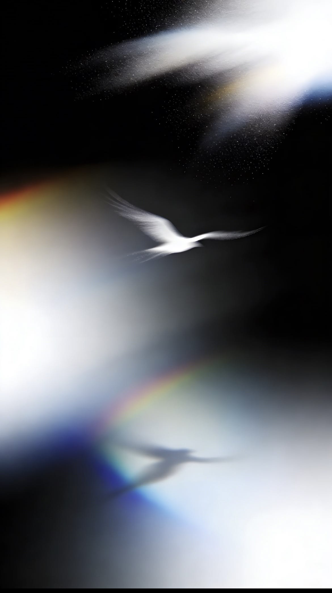
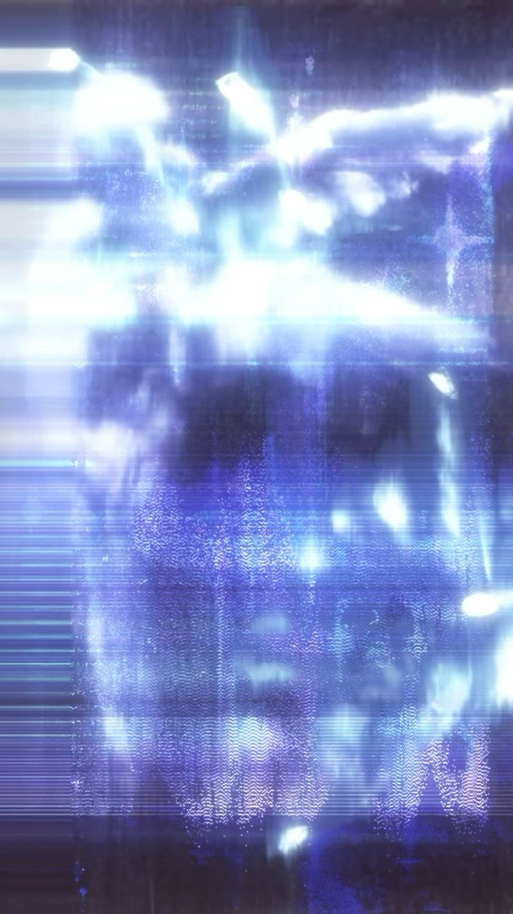
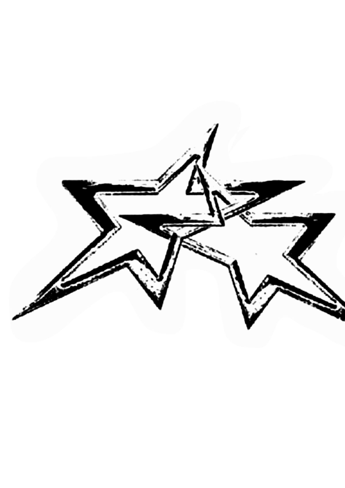

A CURIOUS MIND
IN AN UNFINISHED WORLD.
Beyondthe obvious.
＋
WITH A POINT OF VIEW.
↘[ 01 : PERCEPTION / EXPRESSION ]有些想法，
不必待在框里。
WITH A POINT OF VIEW.
SCROLL TO FIND WHAT'S INSIDE ↓概念预览 / 素材示意
01 / THE PERSON不是标签，是不同的切面。
THE FACE BEHIND
THE IDEAS.
THE IDEAS.
先认识我，
再认识我的作品。
有逻辑的想法。
有直觉的表达。
在内容、视觉与商业观察之间，
把好奇变成问题，把想法变成作品。
关于我
姓名 / 学校与专业 / 实习方向
个人信息将在下一版替换为你的真实经历。
专业技能
我的创作工具
创作偏好
内容策划 · 视觉表达 · 影像叙事 · 商业洞察

STAYCURIOUS.THERE IS ALWAYS MORE TO DISCOVER.
点击唱片，开始转动
02 / NOTES TO THE WORLD观察 → 记录 → 连接
A visible response.截图里的内容与回响
02保留完整帖子截图与真实互动数据，点击可放大查看。
03 / VISUAL LANGUAGE让想法，变得可见。
Form follows
feeling.视觉物料 / SELECTED VISUALS

CLICK TO LOOK CLOSER ↗
视觉方向样张 · 尚非个人项目成果
04 / STILL & MOVING摄影 / 剪辑 / 片刻的证据
Life, in
between.把时间，留在画面里。
换一种看照片的方式
摄影占位素材 / 点击可全屏浏览，← → 切换
Moving images剪辑作品
PRESS PLAY / ENTER THE STORY视频文件待加入，支持导入后本地播放。
05 / THINKING, MADE VISIBLE商业分析 / 创意案例
Behind
the idea.不只呈现结果，也展开思考。
THE QUESTION.
THE INSIGHT.
THE POSSIBILITY.↙
THE INSIGHT.
THE POSSIBILITY.↙
每个案例独立展开，可继续加入更多项目。
06 / AN OPEN ENDINGSTILL CURIOUS. ALWAYS.
An open
ending.
WRITE TO ME
你的邮箱
微信 / 联系方式待填WECHAT
扫码，聊聊新的可能。